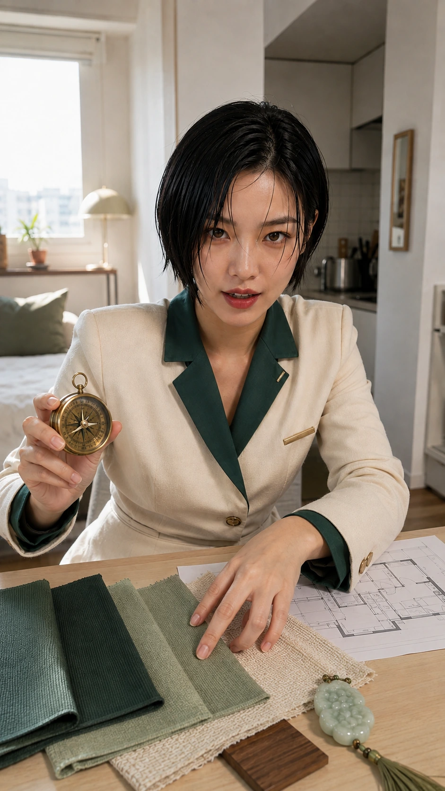
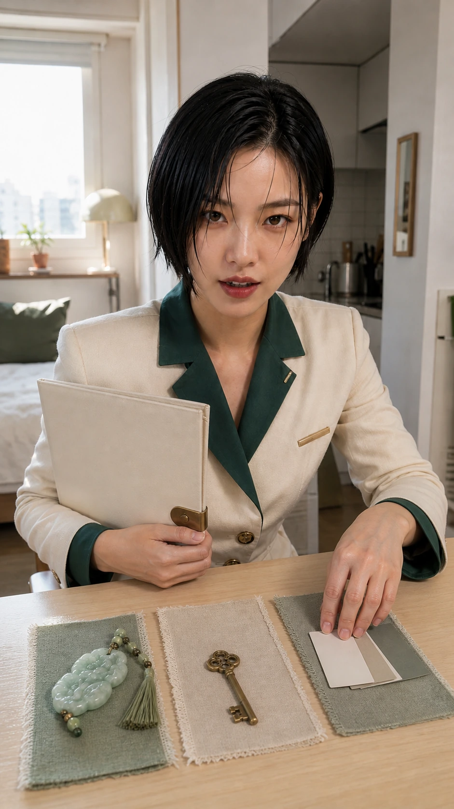
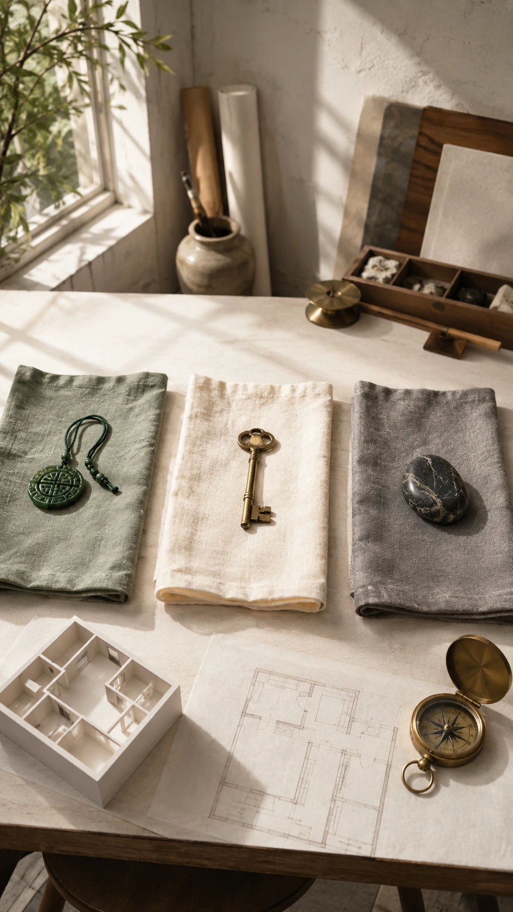

색오늘 고른 색이 내 기운과 어떻게 닿는지 봅니다.

기준좋고 나쁨보다 넘침과 모자람을 먼저 나눕니다.
한 줄 결론

가방늘 들고 다니는 작은 물건부터 가볍게 조정합니다.

소품특정 상품보다 색, 재질, 형태의 결을 봅니다.
확인한 근거

밸런스채울 것과 덜어낼 것을 생활 언어로 바꿉니다.

소재나무, 금속, 세라믹처럼 손에 닿는 감각을 봅니다.
현실에서 보이는 모습

방이미 많은 쪽은 덜어낼 때 공간이 가벼워집니다.

자리책상과 침대, 앉는 위치도 작은 선택으로 봅니다.
오늘 해볼 것

리듬아침 세팅과 집중 시간대를 무겁지 않게 정리합니다.

기록오늘 바꿀 것 하나만 고르면 충분합니다.
오해하지 않을 점

실행옷, 가방, 책상 중 한 곳부터 시작합니다.

마무리불안을 키우지 않고 선택 기준만 남깁니다.